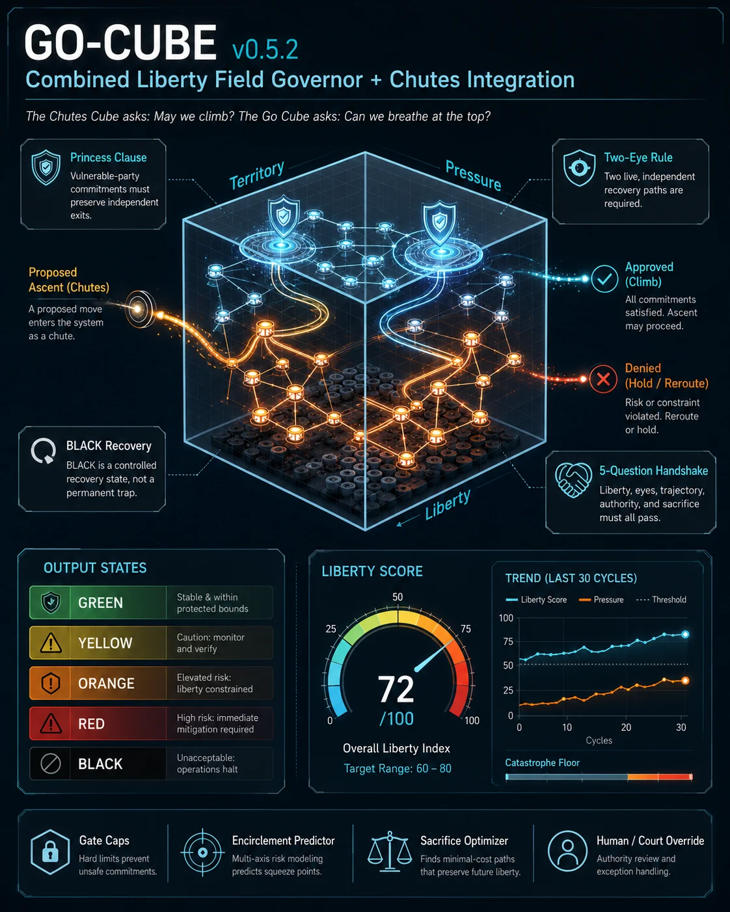
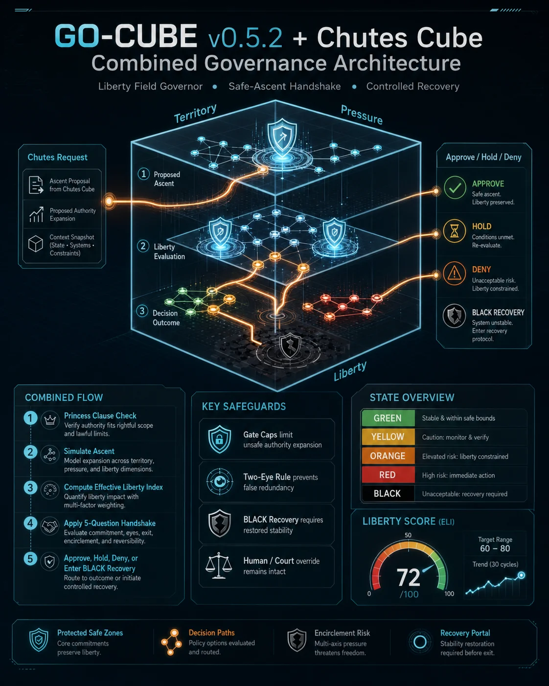

Two-Eye Rule
The diagrams propose requiring two independent, protected ways to verify that a move remains recoverable. Two icons alone do not demonstrate independent failure paths.
A speculative supervisory architecture for evaluating whether an autonomous or semi-autonomous system can take a proposed action without closing off safe future options.
“Do not climb if you cannot breathe where you are going.”
The diagrams propose requiring two independent, protected ways to verify that a move remains recoverable. Two icons alone do not demonstrate independent failure paths.
States where committed safety or autonomy properties must remain true. The pictured boundaries represent design intent, not formally proven invariants.
A proposed score for remaining safe options alongside warnings when multiple pressures constrain future choices. The sample 72/100 in the imagery is illustrative.
Green, yellow, orange, red and black bands communicate proposed conditions. Actual thresholds, authority rules and failure handling require a concrete implementation and independent review.
Three historical image variants. The Chinese-language sheet is a localization, not an independent design or a separate performance claim.



These two graphics extend the core concept: Chutes proposes an ascent; GO-CUBE evaluates whether the proposed higher position leaves safe alternatives and legitimate authority intact.


The Court Governance Stack v1.0-RC2 places GO-CUBE alongside Chutes Cube, HIPPO Bus, Tesseract-Cube and Princess Clause, with a proposed joint approval / hold / denial process.
Separately, the archived Hypha Mind / GO-CUBE — Update-authorization testbed contains limited software evidence about authenticated local updates. Those saved tests do not validate this Liberty Field Governor architecture.
Open Court Governance Stack ↗Open the related software testbed record ↗